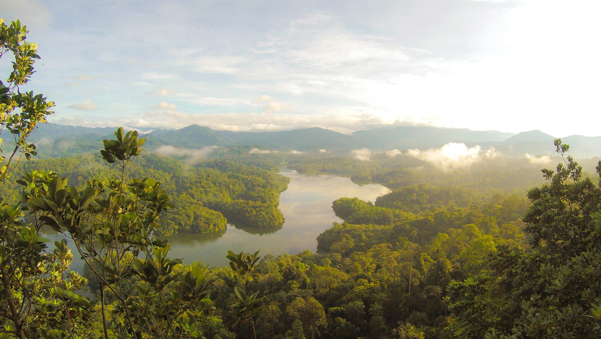
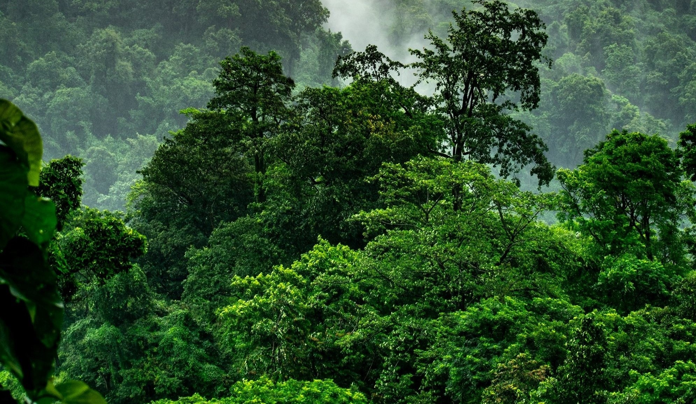
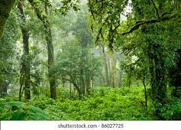
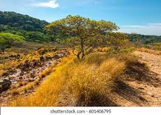
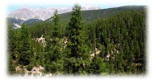
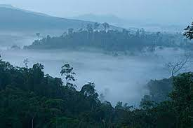
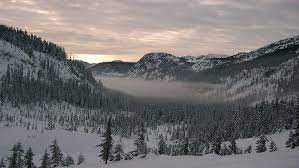

Where the amount of annual rainfall ranges between 200 and 250 cm, the mean annual temperature lies between 24 and 27 and humidity percentage is 80, the evergreen forests degenerate into semi evergreen forests; such forests are found along the Western Coast, in Upper Assam, lower slopes of the eastern Himalaya, Orissa coast and neighbouring hills. Important plant varieties include bamboos, epiphytes, aini, semul, gutel, mundane, hopea, benteak, kadam irul, rosewood, haldu, kanju, bijasal, kusum, bomsum, Indian chestnut, litsea, holloch, champa and mesua, etc.

This types of forests mainly found in Indian Northern Hilly regions and some states of Southern India. Basically, these forests are generated where average annual rainfall ranges varies from 51 cm to 151. Trees of these forests drop its leaves in winter (when the weather remains driest) and new leaves are generated after winter. During rainy season these types of forest completely decorate lush green leaves. Some significant trees of dry tropical forest are sal, acacia, mangoes and bamboo.

These types of forests mainly generated in the state of Assam, Nagaland, Mizoram, Meghalaya, Manipur, Arunachal Pradesh, etc. mountain ranges of Western Ghats are also the abode of these types' forests. Some significant trees of montane sub tropical forest are poonspar, cinnamon, rhododendron, sal, sandan, laburnum, pomegranate, olive, oleander, etc.

These types of forests mainly generated in the state of Assam, Nagaland, Mizoram, Meghalaya, Manipur, Arunachal Pradesh, etc. mountain ranges of Western Ghats are also the abode of these types' forests. Some significant trees of montane sub tropical forest are poonspar, cinnamon, rhododendron, sal, sandan, laburnum, pomegranate, olive, oleander, etc.

These grasslands start at an elevation of above 3000 m grow up to the region just below the snowline. They are common in both the main Himalayan regions as well as the barren cold deserts of the Tran Himalaya. Low alpine grasslands are common with the vegetation not growing higher than 1.5m. Climatic conditions vary from the sub-arctic to arctic, with snow covering the ground for over 5 months a year. The growing season for the plants is thus stunted. Pastures are grazed by migratory cattle in summer. The vegetation consists mainly of the black juniper, the drooping juniper; honeysuckle and willow are the common trees.
©Sadhana Prajapati, All rights reserved.
Go somewhere